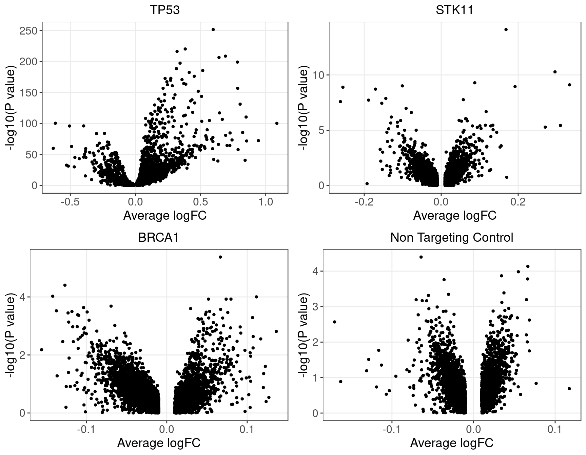
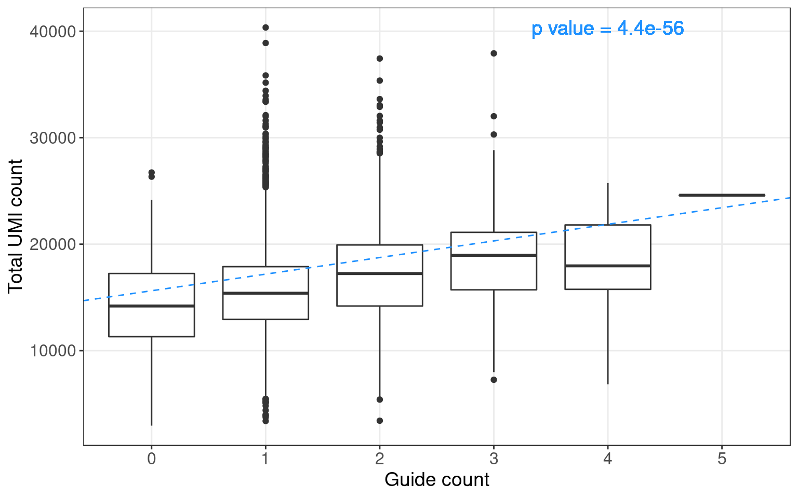
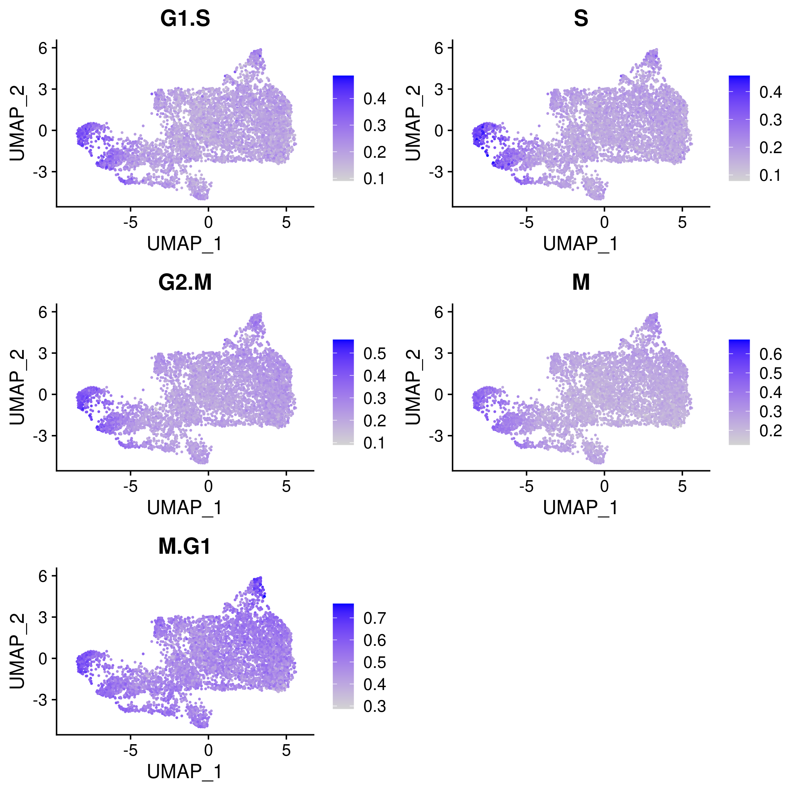

1 Data Settings
CROP-seq data source:
On the design of CRISPR-based single cell molecular screens, GEO accession: GSE108699.
Cells:
MCF10A cells (normal human breast epithelial cells) with exposure to a DNA damaging agent, doxorubicin;
Perturbations:
CRISPR knock-outs of 29 tumor-suppressor genes (TP53, …), 1 non-targeting control.
1.1 Doxorubicin-treated expression data
There are 5584 cells with nonzero gRNA count.
1.2 Perturbations


1.2.1 Distribution of Knock-out Perturbations

1.2.2 Wilcoxon Differential Expression Test
Number of genes that passed pval_adjust < 0.2 under each perturbation:| KO | APC | ARID1A | ARID1B | ATM | BAP1 | BID | BRCA1 | BRCA2 | CASP8 | CDH1 |
| DE_genes | 1 | 1 | 1 | 0 | 0 | 0 | 1 | 0 | 0 | 0 |
| KO | CDKN1B | CDKN2A | CHEK1 | CTCF | GATA3 | MLH1 | MLL2 | MLL3 | NCOR1 | NF1 |
| DE_genes | 0 | 0 | 0 | 0 | 0 | 0 | 0 | 0 | 1 | 0 |
| KO | NONTARGETING | PTEN | PTPN22 | PTPRD | RAD51 | RB1 | RUNX1 | SETD2 | STK11 | TP53 |
| DE_genes | 0 | 1 | 1 | 1 | 1 | 33 | 0 | 1 | 34 | 3476 |

1.3 Potential confounding factors
Positive correlation between number of guides and cell library size: 
Cell cycle effects (colored by the mean expression of signature genes at the corresponding cell cycle stage):

1.4 Preprocessing of RNA count matrix:
Seurat “LogNormalize”: log(count per \(10^4\) + 1).
Library size was regressed out, and the residuals were used as input.
Only cells with gRNA readout were kept.
We tried two ways to filter the genes.
2 Factor Analysis on Expression Data
2.2 Using genes detected in > 5% of cells
2.3 Using genes detected in > 10% of cells
2.3.1 Single Marker (TP53 Knock-out) Results
Method: Guided Sparse Factor Analysis (GSFA), with \(G\) matrix being TP53 KO condition across cells.
We specified 20 factors and 1000 iterations per run; posterior estimates were averaged over the last 100 iterations.
- SVD Initialization, Guided
| index | pi | sum_var | beta_pm-1 | beta_reg-total_umis | beta_reg-TP53 | pval-total_umis | pval-TP53 |
|---|---|---|---|---|---|---|---|
| 1 | 0.847 | 136.2 | -0.1747 | 6.463e-08 | -0.1954 | 0.983 | 9.133e-05 |
| 2 | 0.8892 | 95.01 | 1.013 | 9.103e-08 | 1.102 | 0.9771 | 5.047e-103 |
| 3 | 0.6521 | 73.34 | -1.516 | -2.111e-07 | -1.654 | 0.9488 | 1.255e-223 |
| 4 | 0.7092 | 45.67 | 0.3592 | 1.658e-07 | 0.3935 | 0.9565 | 3.282e-15 |
| 5 | 0.6742 | 41.3 | -0.4578 | -1.366e-07 | -0.4915 | 0.9639 | 3.509e-23 |
| 6 | 0.7183 | 31.63 | 0.8313 | 1.676e-07 | 0.8876 | 0.956 | 4.364e-72 |
| 7 | 0.6003 | 16.34 | -0.4224 | -2.984e-07 | -0.4608 | 0.9187 | 8.088e-22 |
| 8 | 0.6632 | 13.61 | 0.02563 | -2.662e-08 | 0.02044 | 0.9924 | 0.6592 |
| 9 | 0.7321 | 13.05 | -0.4462 | -1.94e-07 | -0.4927 | 0.9457 | 5.559e-26 |
| 10 | 0.4742 | 12.02 | -0.512 | -4.653e-07 | -0.5465 | 0.8727 | 1.712e-30 |
| 11 | 0.4997 | 9.546 | 0.4417 | 4.08e-07 | 0.4785 | 0.8864 | 1.862e-24 |
| 12 | 0.3889 | 8.103 | 0.226 | 9.853e-08 | 0.2355 | 0.9723 | 4.492e-07 |
| 13 | 0.478 | 9.667 | 0.05369 | -8.903e-09 | 0.05506 | 0.9975 | 0.241 |
| 14 | 0.1952 | 11.12 | -0.03522 | 1.382e-08 | -0.03318 | 0.9963 | 0.4988 |
| 15 | 0.4271 | 8.34 | 0.8556 | 7.251e-07 | 0.9315 | 0.8029 | 3.986e-87 |
| 16 | 0.3369 | 6.527 | 0.1887 | 7.181e-08 | 0.2032 | 0.9797 | 1.286e-05 |
| 17 | 0.3244 | 6.527 | 0.01464 | -6.2e-09 | 0.01713 | 0.9982 | 0.713 |
| 18 | 0.2236 | 4.6 | 0.1364 | 3.3e-07 | 0.1494 | 0.9063 | 0.001231 |
| 19 | 0.2328 | 6.29 | -0.2145 | -2.555e-08 | -0.238 | 0.9929 | 4.858e-07 |
| 20 | 0.2953 | 4.12 | 0.181 | 4.797e-07 | 0.1851 | 0.8619 | 4.625e-05 |
Random Initialization, Guided
SVD Initialization, G = 0
| index | pi | sum_var | beta_pm-1 | beta_reg-total_umis | beta_reg-TP53 | pval-total_umis | pval-TP53 |
|---|---|---|---|---|---|---|---|
| 1 | 0.8401 | 134.3 | -0.003691 | -2.829e-08 | -0.2864 | 0.9926 | 1.363e-08 |
| 2 | 0.8904 | 97.06 | 5.01e-05 | 8.143e-09 | 1.106 | 0.9978 | 1.588e-114 |
| 3 | 0.6747 | 73.26 | -0.2216 | 1.383e-08 | -1.449 | 0.9964 | 3.541e-195 |
| 4 | 0.7069 | 44.64 | -0.07664 | 8.453e-08 | 0.3302 | 0.9773 | 1.349e-11 |
| 5 | 0.664 | 43.45 | 0.08445 | -1.832e-08 | -0.5076 | 0.9951 | 3.682e-25 |
| 6 | 0.7214 | 31.19 | -0.05411 | -4.472e-08 | 0.6968 | 0.988 | 5.763e-47 |
| 7 | 0.5947 | 17.13 | 0.1226 | 1.007e-07 | 0.01233 | 0.9724 | 0.7974 |
| 8 | 0.6526 | 12.81 | -0.06435 | -2.113e-08 | -0.1382 | 0.9941 | 0.003259 |
| 9 | 0.7294 | 12.33 | -0.1006 | 6.292e-08 | -0.2902 | 0.9822 | 3.82e-10 |
| 10 | 0.5023 | 10.88 | -0.1125 | -1.566e-08 | -0.3305 | 0.9956 | 2.294e-12 |
| 11 | 0.4849 | 8.318 | 0.1487 | -4.097e-08 | 0.3549 | 0.9883 | 1.348e-14 |
| 12 | 0.399 | 8.477 | -0.142 | 6.242e-09 | 0.1756 | 0.9982 | 0.0001652 |
| 13 | 0.4699 | 10.17 | -0.1081 | 1.507e-08 | 0.009754 | 0.9958 | 0.8353 |
| 14 | 0.196 | 11.08 | 0.08966 | 8.645e-09 | -0.006444 | 0.9976 | 0.894 |
| 15 | 0.4577 | 8.147 | -0.1448 | -1.433e-08 | 0.6128 | 0.9959 | 3.085e-40 |
| 16 | 0.3293 | 6.173 | 0.1098 | -1.89e-08 | -0.02523 | 0.9947 | 0.588 |
| 17 | 0.3284 | 7.409 | -0.05914 | -9.599e-09 | 0.09621 | 0.9973 | 0.03939 |
| 18 | 0.2254 | 4.551 | -0.2116 | 4.979e-08 | 0.02682 | 0.9857 | 0.5596 |
| 19 | 0.2435 | 6.641 | 0.08643 | 1.266e-10 | -0.1855 | 1 | 8.925e-05 |
| 20 | 0.2799 | 4.097 | -0.1149 | -3.562e-08 | 0.05868 | 0.9897 | 0.1967 |
- Difference btw Methods in Factor Estimation
For a pair of \(Z\) estimations from 2 inference methods, \(Z_1, Z_2\), we quantify the pairwise estimation difference as \(||Z_1Z_1^T - Z_2Z_2^T||_1/N^2\), where \(N\) is the number of rows (samples) in \(Z\).
Difference btw Guided SVD and Random: 0.608
Difference btw Guided SVD and Unguided SVD: 0.38